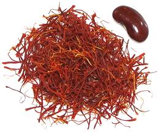
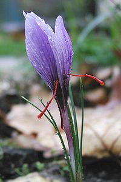

Saffron

[Crocus sativus]
The only plant in the Iris family of culinary importance, the Saffron
Crocus, does not appear in nature - it is sterile, so must have been
the result of human intervention. It may have originated in Bronze-Age
Crete, but is now harvested as a crop from Spain through India
and North Africa. The only part of the plant with culinary use is the
stigmas, thread like components of the flower. These are used as a
flavoring and coloring in many cuisines. They must be dried, causing
chemical changes, before they are effective.
It takes 150 flowers to make 1 gram (0.035 ounce). These threads must be
carefully harvested by hand. In North America, a single gram can cost
between US $2.00 and $16.00, depending on size of the package, grade
of saffron, point of origin and what the retailer thinks he can get
from his customers. The photo to the left shows 1 gram of Spanish
saffron, with our ubiquitous red kidney bean for size comparison.
The largest producer, with something like 90% market share, is Iran, but
Iranian Saffron is not available in the United States due to political
reasons. Greece is next, then Kashmir and Morocco, with Afghanistan rising
as Kashmir falls. Saffron is also increasingly grown in Australia,
particularly for medicinal purposes. That available in North America is most
commonly from Spain and Afghanistan (Persian type). The supply from
Afghanistan is now uncertain due to the Taliban takeover (2021).
More on Spices.

Saffron is used particularly in the cuisines of Spain, Italy, Greece
and the Islamic regions from Morocco into India, particularly Iran.
Buying:
Saffron should be purchased as whole threads as
pictured above, because with powdered saffron or saffron water, you can't
really know what you're getting. Also, it will keep much longer as threads.
Several brands are available on the Internet. Trader Joes usually has Spanish
saffron in tiny glass jars for 2021 US $5.98 for 0.02 ounce (0.56 gram -
$10.68/gram). Currently (9-2021), Afghan saffron is available for $5.99 /
gram in 5 gram cans. Prices for Spanish saffron are all over the map, but
generally significantly less than Afghan, as low as 2021 US $1.25 / gram in
one ounce cans.
Powdering:
In Iran, Saffron threads are usually powdered
before soaking in hot water. They can be ground in a small mortar. If not grinding
well, add a touch of salt grains to help.
Weights:
A quarter teaspoon of saffron powder weighs about
0.7 grams. 1 gram of threads is about 1/2 Tablespoon very loosely packed.
Storing:
Kept in a tightly sealed container away from
heat and light, saffron threads will last well over a year.
Cooking:
Saffron is very powerful, so is usually used in
"pinch" quantities or a little larger. Caution: any oil
or fat in a recipe will coat the saffron threads and lock in their flavor
and aroma. The desirable properties are water soluble, so threads or powder
should be soaked in hot water (some say milk) For 10 minutes or so.
Health & Nutrition:
There is considerable ongoing
study of the medicinal properties of saffron, which has been
used as a medicinal for thousands of years. Current research indicates
it may be effective against macular degeneration, Parkinson's disease
and other nerve and brain disorders.
Photo by
Gut Gimritz distributed under license Creative Commons
Attribution-ShareAlike 3.0 Unported.
ir_saffroz 130523 - www.clovegarden.com
©Andrew Grygus - agryg@clovegarden.com - Photos
on this page not otherwise credited © cg1
- Linking to and non-commercial use of this page permitted